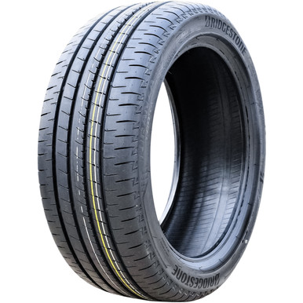
PCR / Car轿车 / 乘用车胎
Passenger carPCRSUV 无 LT/C
看什么：品名写 Passenger、Car、PCR；规格像 195/65R15 91H、205/55R16。
Marking：P、RADIAL、速度级 H/V/W；SUV 的 HT/AT/MT 只是花纹，不自动变轻卡。
标准桶：KS EAS 358:2004
适用于轮胎标准初审：先看品名，再看侧标/花纹 Marking，再看规格，最后用 HS 交叉复核。口诀是“人车路、工农场、胎管带圈阀分开判”。

PCR / Car看什么：品名写 Passenger、Car、PCR；规格像 195/65R15 91H、205/55R16。
Marking：P、RADIAL、速度级 H/V/W；SUV 的 HT/AT/MT 只是花纹，不自动变轻卡。
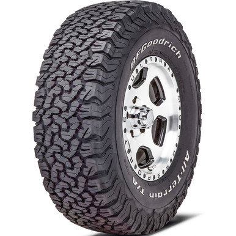
LT / C看什么：规格带 LT 或 C，比如 LT245/75R16、195R15C、205/75R16C。
Marking：LT、C、8PR/10PR、Load Range C/D/E 是强线索。
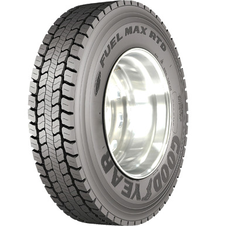
TBR看什么：11R22.5、295/80R22.5、315/80R22.5、12.00R20。
Marking：REGROOVABLE、TUBELESS、位置词 Steer/Drive/Trailer 常见。
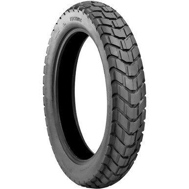
M/C看什么：90/90-17 M/C、2.75-18、3.00-10、120/70ZR17。
Marking：M/C 是 motorcycle；NHS 表示非公路用途。
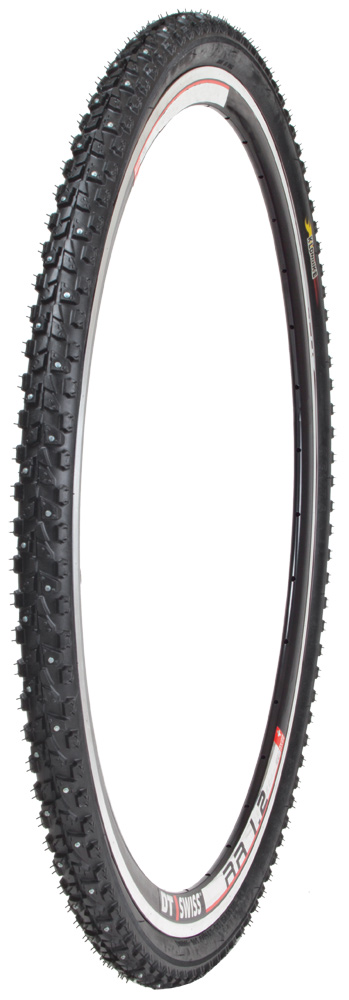
Bike看什么：700x25C、26x1.95、37-622、28-622。
Marking：ETRTO 双数字如 37-622 是自行车常见写法。
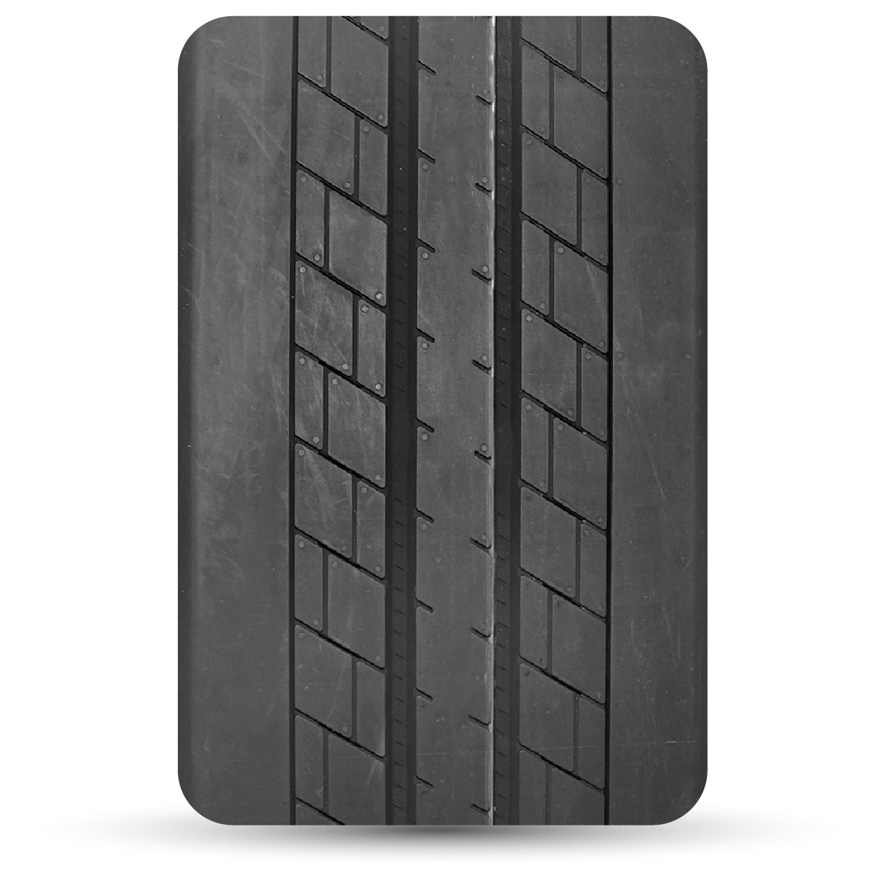
Retread看什么：品名或文件明确写 retread/remould/renewed。
Marking：RETREAD、REMOLD、翻新厂标识；新胎标准不能直接替代。
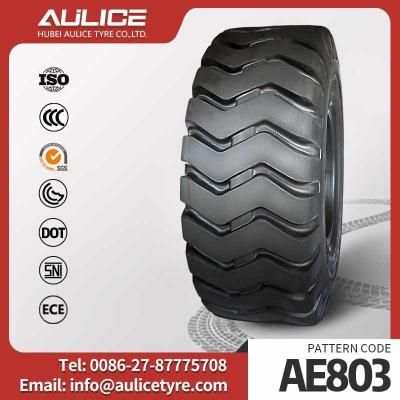
OTR看什么：17.5-25、20.5-25、23.5-25、14.00-24、16.00R25。
Marking：E-2/E-3/E-4、L-3/L-5、G-2/G-3 是工程用途强线索。
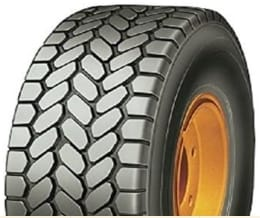
Crane看什么：385/95R25、445/95R25、525/80R25 等，常有较高速度级。
Marking：Crane、E/F 速度级、公路行驶能力是重点。
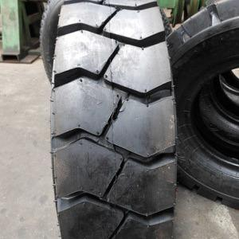
Solid看什么：品名写 Solid、Resilient solid、Press-on solid。
Marking：SOLID、non-pneumatic；注意不是充气胎。
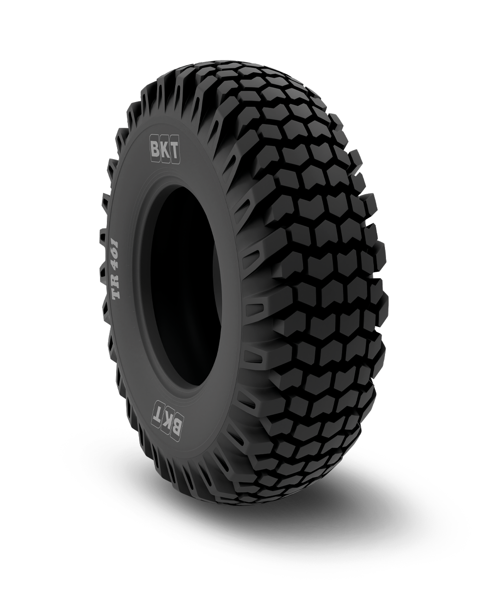
R-4 / IND看什么：12.5/80-18、16.9-24 R-4、19.5L-24。
Marking：R-4 或 IND 是关键；外形像农机，但用途在工程机械。
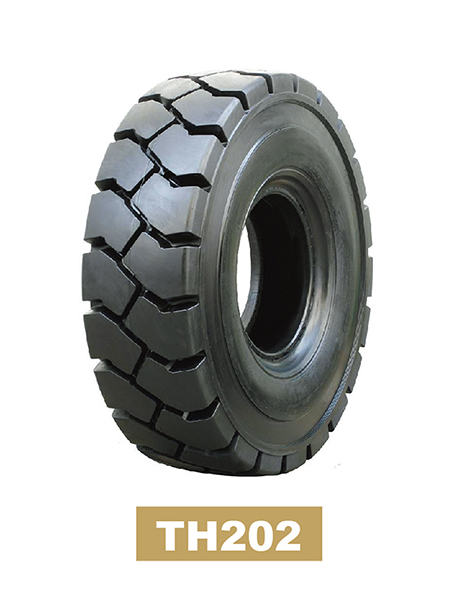
3739看什么：6.50-10、7.00-12、8.15-15、250-15，且品名明确工业车辆。
Marking：Industrial、Forklift、Pneumatic；没有 OTR/E/L/G 工程花纹代码。
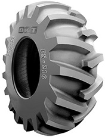
Forestry看什么：品名写 Forestry、Logging、Skidder。
Marking：LS、LS-2、LS-3、Forestry service 是强线索。
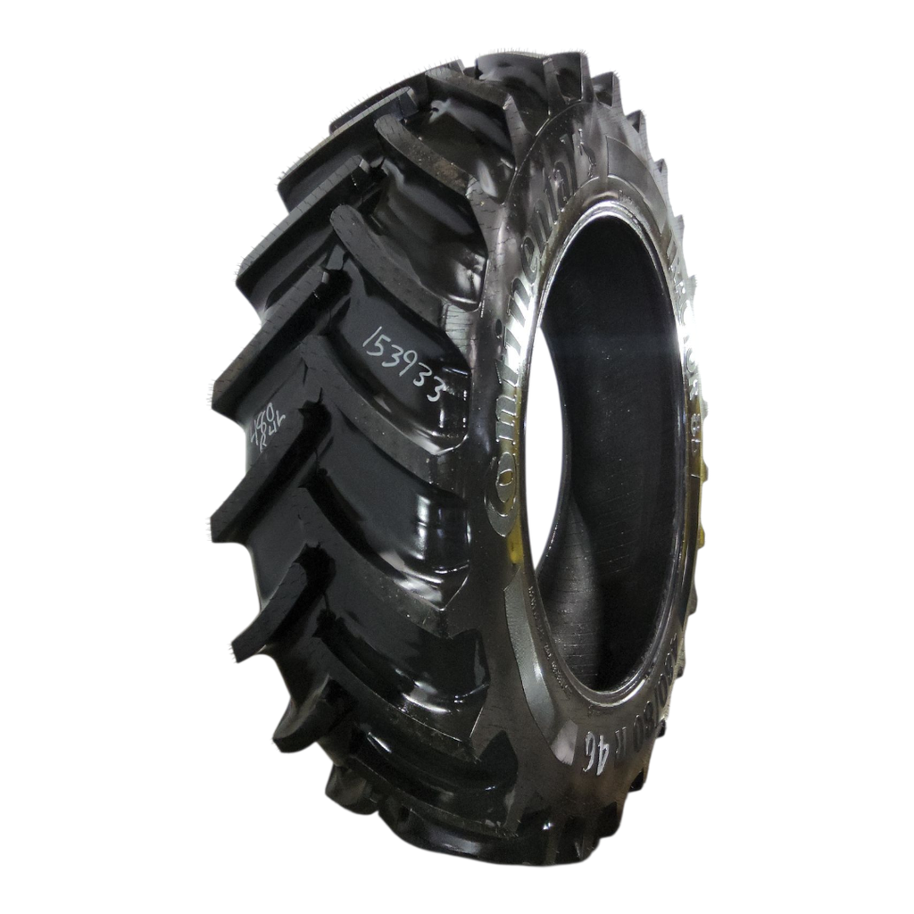
R-1W看什么：16.9-28、14.9-30、18.4-34、13.6-28，常带 PR。
Marking：R-1、R-1W、R-2、F-2；人字花纹是常见视觉线索。
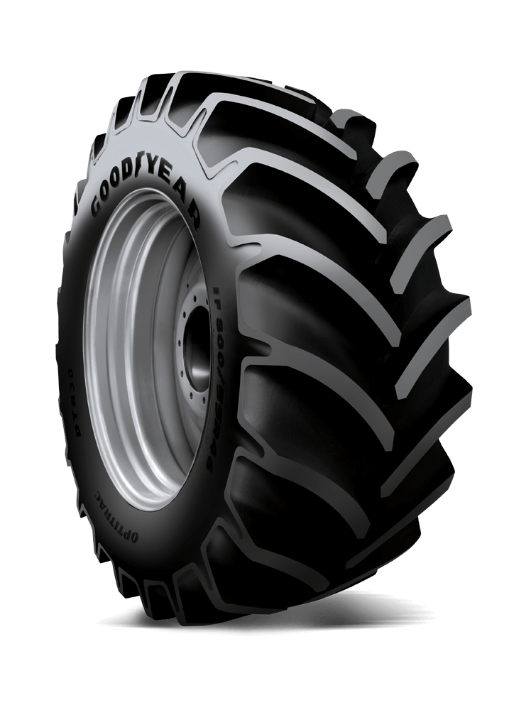
480/70R34看什么：480/70R34、70 series、Tractor Radial。
Marking：RADIAL、R-1/R-1W、载重指数/速度级比 PR 更常见。
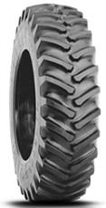
520/85R38看什么：520/85R38、Agricultural Radial、Rear Tractor。
Marking：RADIAL、R-1、载重/速度符号；规格通常由侧标或技术页确认。
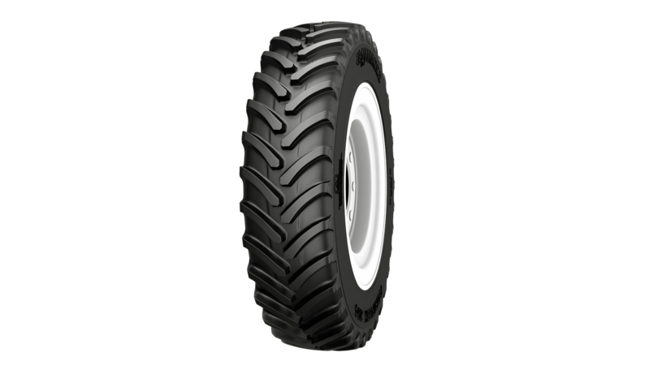
IF/VF看什么：IF 或 VF 前缀，比如 VF480/70R34、IF520/85R38。
Marking：IF/VF 是高挠曲农业径向胎线索，需和普通 radial 区分记录。
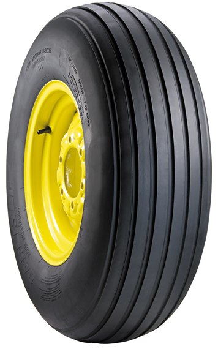
Implement看什么：品名写 Agricultural implement、Farm trailer。
Marking：I-1、11L-15、10.0/75-15.3 等常见；不是拖拉机驱动胎。
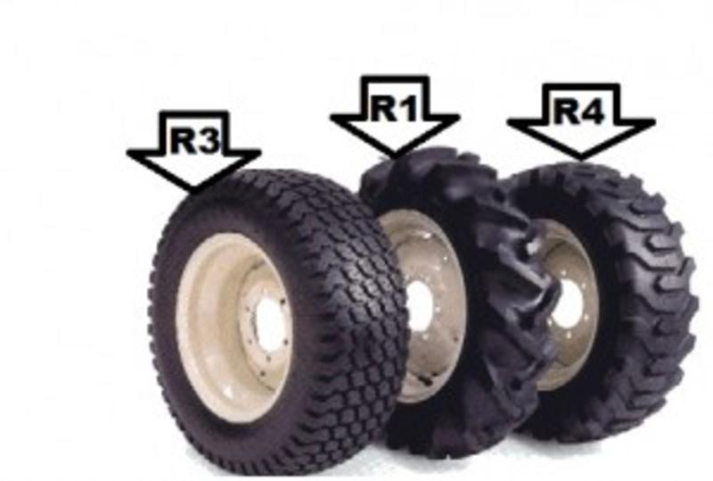
R-1 / R-4看什么：如果文件只写 Tyre + 16.9-28，先问用途/花纹；R-1/R-2 走农机，R-4/IND 转工程农用。
Marking：同一尺寸可能对应不同用途，花纹代码比“看起来像”更可靠。
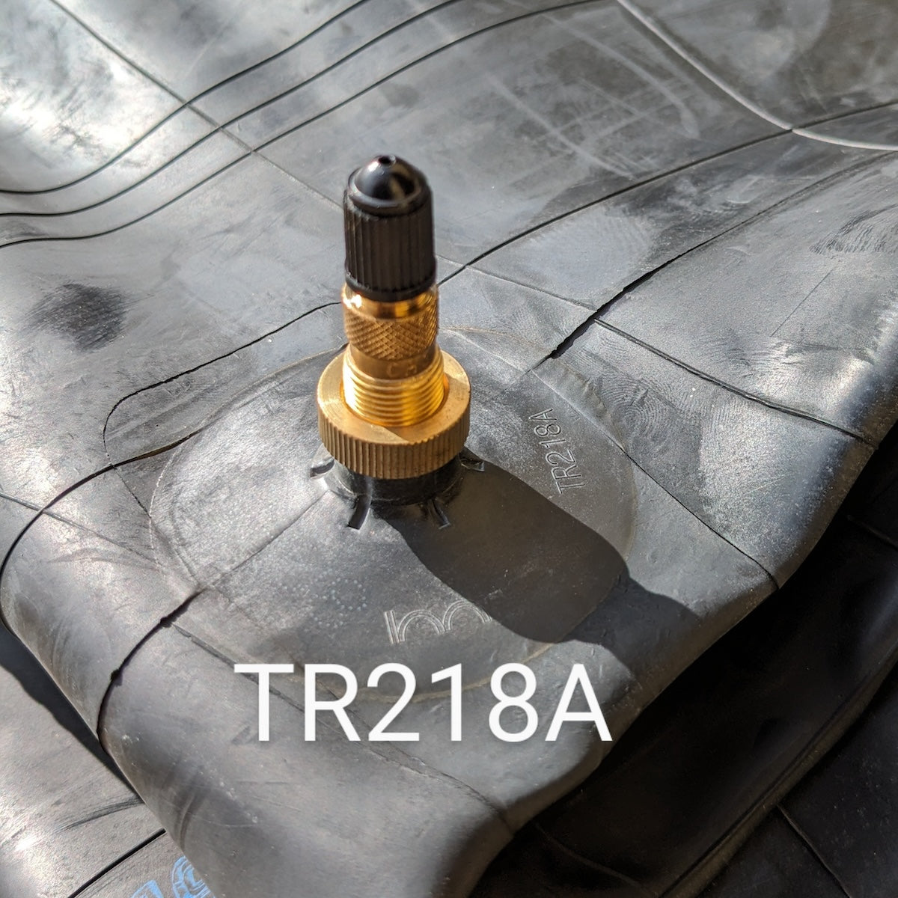
Tube看什么：Tube 17.5-25、Tube 23.5-25；HS 常在 4013。
Marking：TR13/TR15/TR218A 等气门嘴型号可辅助判断。
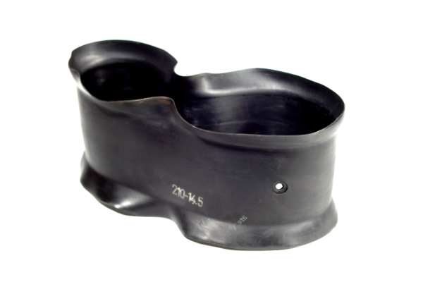
Flap看什么：Flap 17.5-25、Flap 23.5-25；通常跟 TT 工程胎配套。
Marking：只要写 Flap，就不要按 inner tube 审。
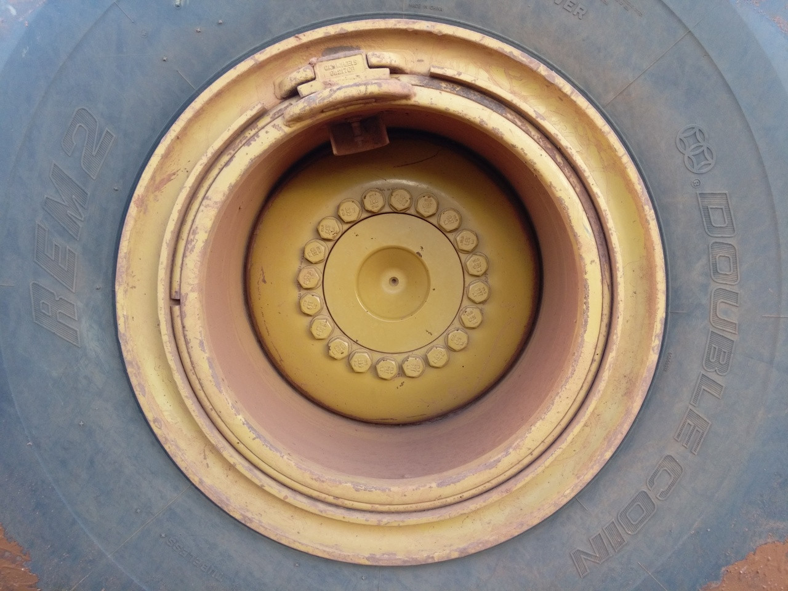
Rim / Wheel看什么：14.0-25 wheel、19.5-25 rim；图片是金属件，不是橡胶胎。
Marking：多件式锁圈、轮辋宽度 x 直径；不要把 Tube 写进品名。
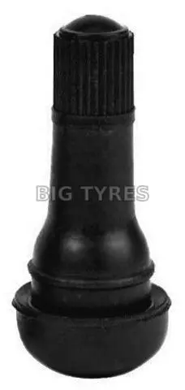
Valve看什么：TR13、TR218A、V3-06-5、Tubeless valve。
Marking：这是轮胎配件，不按 Tyre/Tube 标准。
PPCR乘用车；LTC轻卡；M/C摩托车；TBR卡客车；OTR工程胎。E-2E-3E-4自卸/土方；L-3L-5装载机；G-2G-3平地机。R-1R-1WR-2拖拉机驱动；F-2前轮；I-1农机具；R-4IND工程农用。RRADIAL径向；PR层级；TT有内胎；TL无内胎；NHS非公路。REGROOVABLE常见卡客车；Load Range E轻卡常见；速度级 H/V/W 多见乘用。Tube内胎；Flap垫带；RimWheel钢圈；Valve气门嘴。| 规格写法 | 初步归类 | 还要确认什么 | 常用标准方向 |
|---|---|---|---|
| 195/65R15、205/55R16 | 乘用车 | 是否有 P/PCR；是否无 LT/C | KS EAS 358 |
| LT245/75R16、195R15C | 轻卡/商用车 | LT、C、Load Range、PR | EAS 359 |
| 11R22.5、315/80R22.5 | 卡车/公共汽车 | Truck/Bus/TBR、REGROOVABLE | KS EAS 357 |
| 17.5-25、20.5-25、23.5-25 | OTR 工程胎 | E/L/G 花纹代码、用途是否 loader/grader/mining | KS ISO 4250-1/2 |
| 16.9-28、18.4-34 | 农机胎 | R-1/R-2 走农机；R-4/IND 转工程农用 | KS ISO 4251-1/2 或 KS ISO 18808 |
| 480/70R34、520/85R38 | 农业径向胎 | RADIAL、IF/VF、载重速度符号 | KS ISO 8664 |
| 12.5/80-18、16.9-24 R-4 | Backhoe/工程农用胎 | R-4、IND、Backhoe loader | KS ISO 18808 |
| 6.50-10、7.00-12、250-15 | 工业车辆/叉车 | Solid 还是 pneumatic；是否 forklift/industrial | 充气 KS ISO 3739；实心 KS ISO 10499 |
| 14.0-25 wheel、19.5-25 rim | 钢圈/轮辋 | 出现 Rim/Wheel/Steel wheel 时按轮辋复核；不要按 Tube 套 | ISO 4250-3 或 KS ISO 18804 |